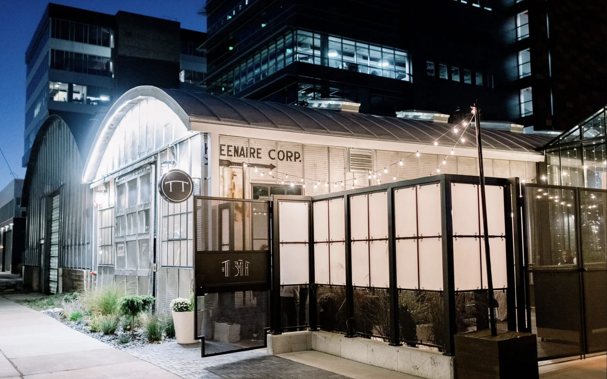
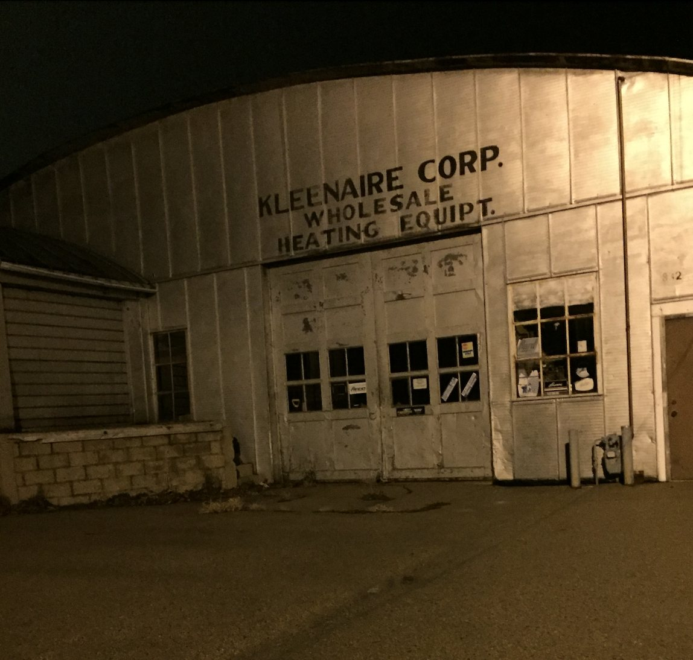
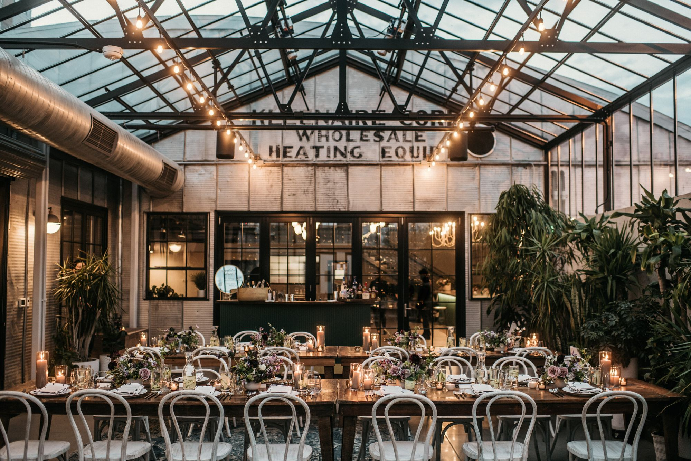
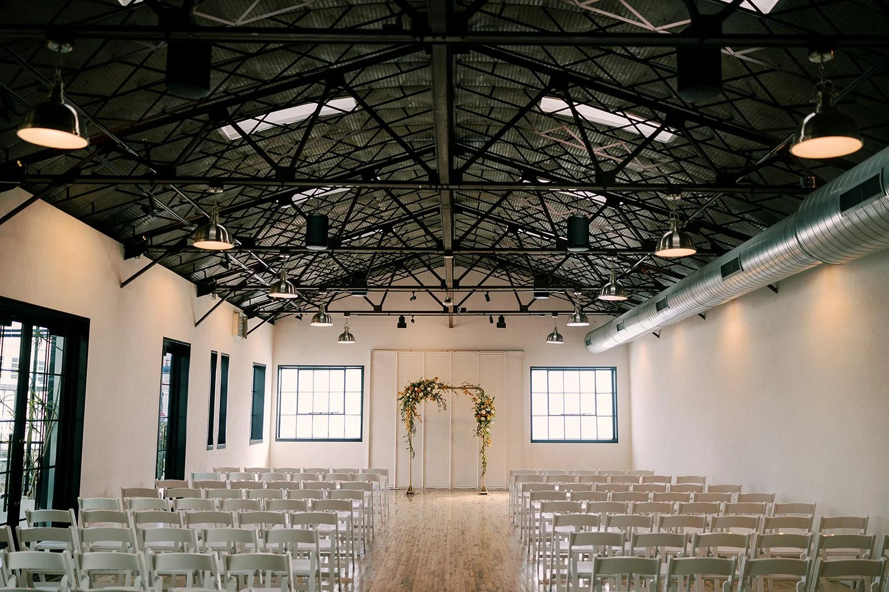
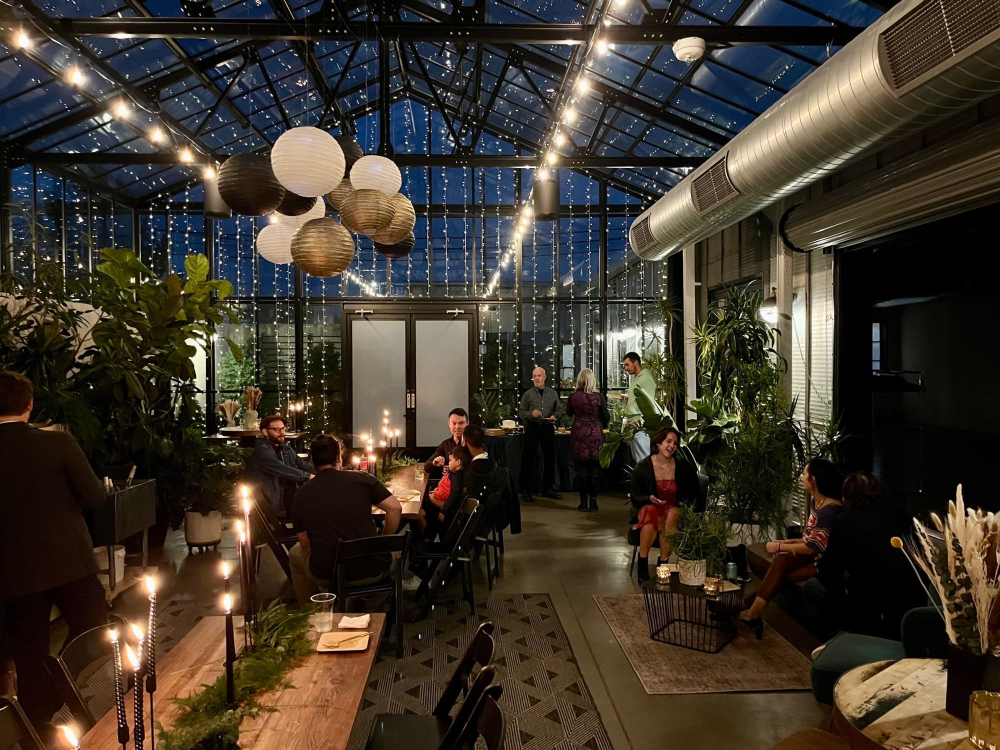
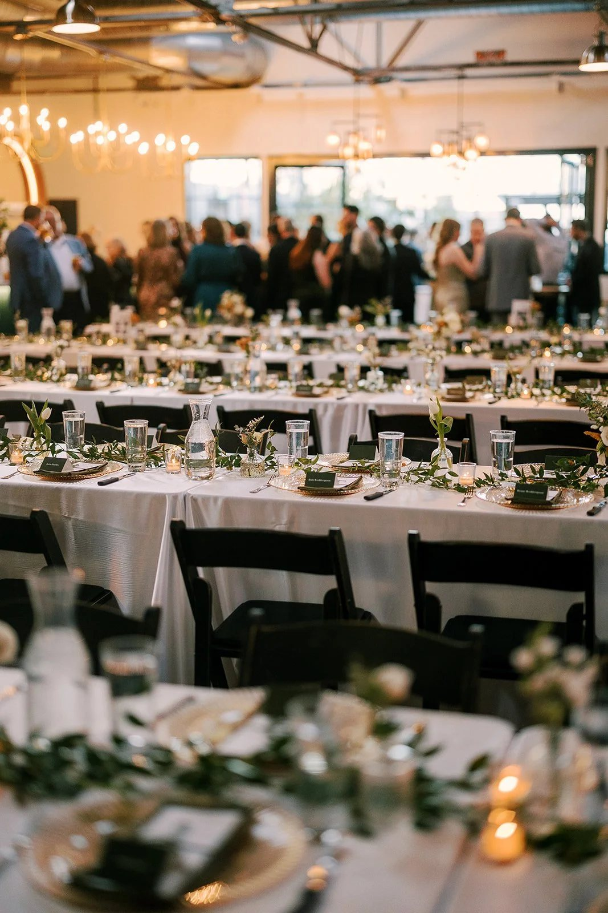

03 · Adaptive reuse · Completed
The Tinsmith
- Address
- 828 E Main Street, Madison
- Type
- Adaptive reuse
- Size
- About 9,000 SF
- Acquired
- 2018
- Opened
- 2020
- Partners
- William Butcher and Eric Welch
NMD project, William Butcher and Eric Welch
Two Trachte steel warehouses, kept instead of demolished, now a wedding and event venue.
- Two joined Trachte steel warehouses, about 9,000 SF under barrel-vaulted roofs. Trachte was the Madison company that patented the prefabricated steel building.
- Acquired in 2018 after a seven-year pursuit.
- Converted, instead of demolished, into The Tinsmith, a wedding and event venue with a glass solarium courtyard. Opened 2020.
Recognition
Awards.
- Adaptive Reuse Project of the Year 2021Madison Trust for Historic Preservation
- Best venue in Wisconsin, four years runningWisconsin Bride